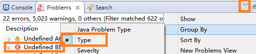
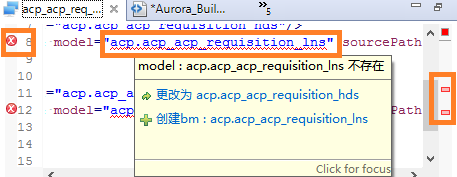

Aurora Builder功能会自动检查Aurora工程中的代码所包含的错误和可能存在的问题。
所有检查出来的问题都会在中显示出来，将所有问题按类型（Type）分类可以更明确的查看各种问题。双击具体的错误，可以在编辑器中打开该文件、并定位到该错误。

正在编辑器中显示的文件也可以同步的显示错误标记，鼠标悬浮于波浪线标注的文本则可显示错误明细，并有修正提示。点击右侧标注栏可以全局定位错误位置。

每个工程在第一次full build(或执行Aurora Search)的时候耗时较多，之后的过程会有缓存支持,速度很快。缓存在eclipse关闭后失效。
即时build在文件较大时（超过2000行），可能会出现编辑器卡顿的现象。